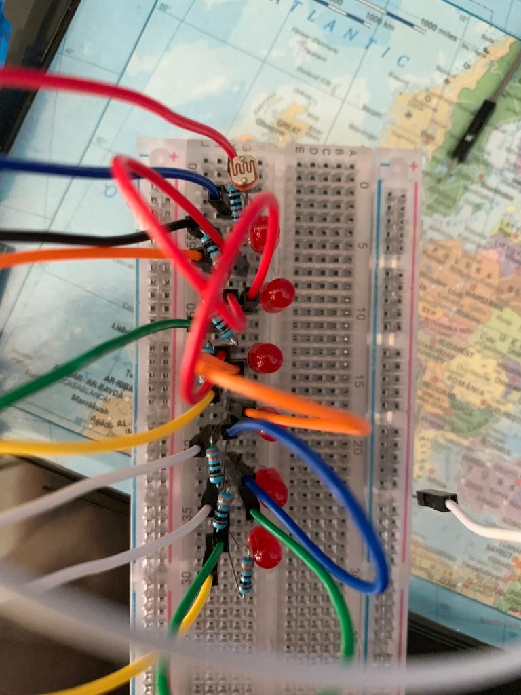
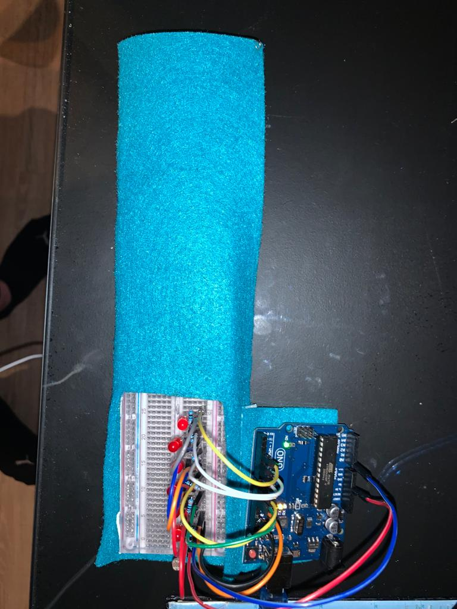
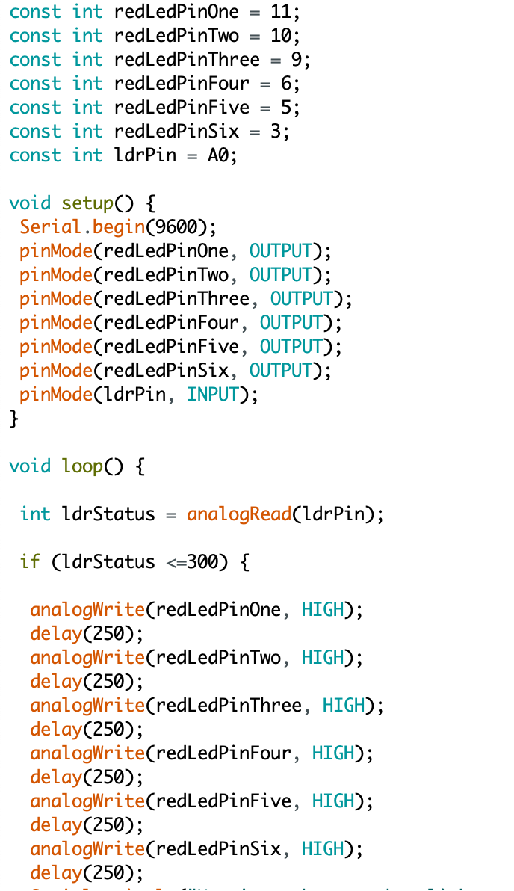
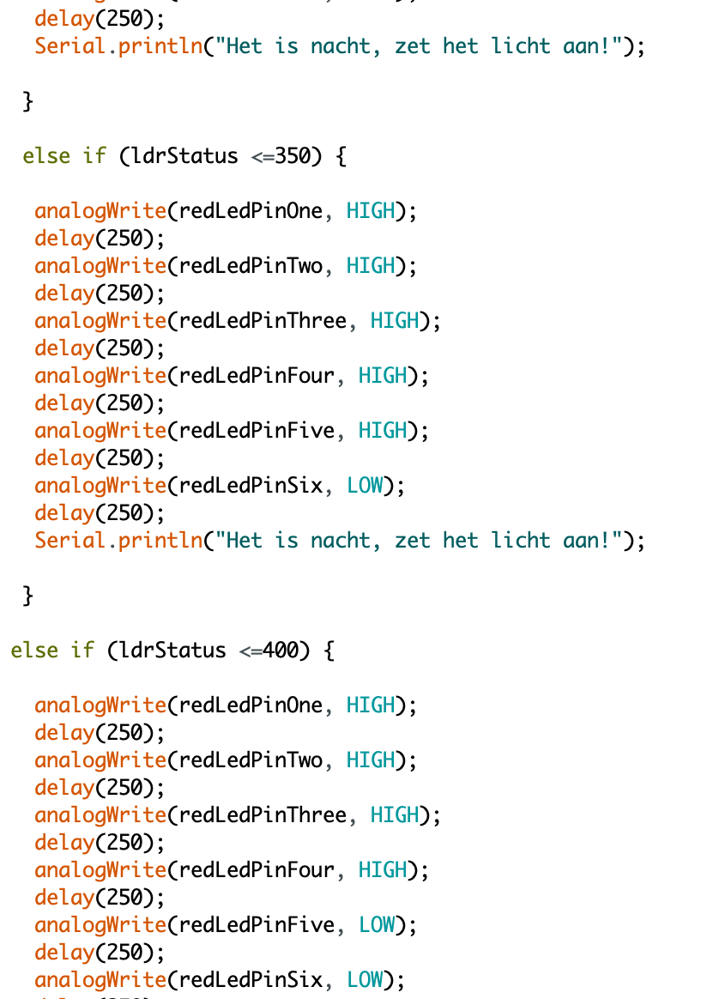
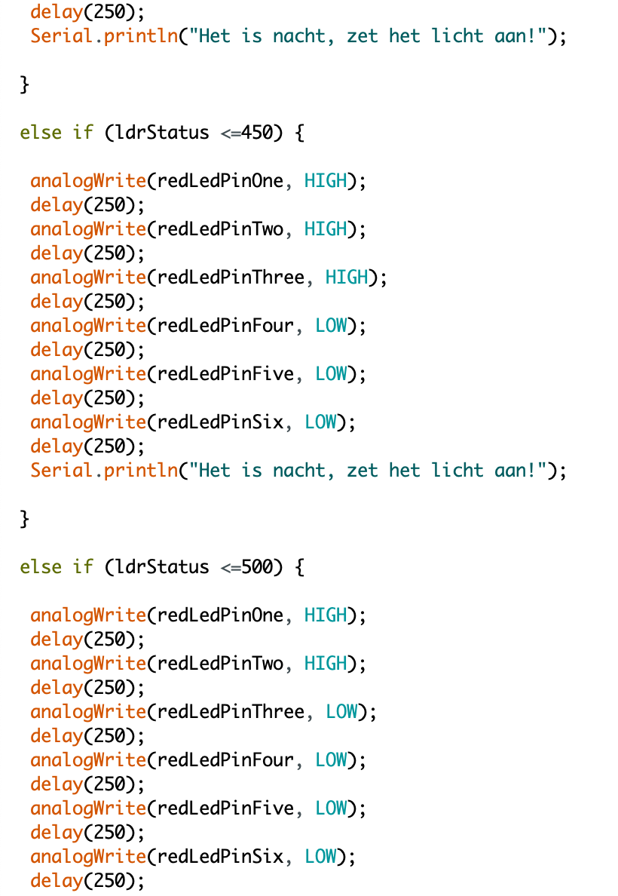
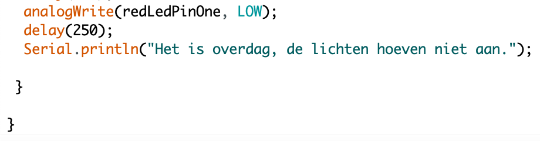

PLAYFUL INTERACTION
CHALLENGE
DESIGN & BUILD
Voor het design & build gedeelte van de challenge heb ik een lichtmeter gemaakt. Deze meter gaat aan op het moment dat het lichtlevel onder de of gelijk aan de 550 staat. Elke keer als het lichtlevel daalt met 50 gaat een extra lampje aan totdat het bij lichtlevel 300 komt. Deze lichtmeter kan gebruikt worden om te kijken of er genoeg licht is op een bepaalde plek. Dit kan handig zijn om bijvoorbeeld te kijken hoeveel licht jouw kamerplanten krijgen. Elke kamerplant heeft een bepaalde hoeveelheid licht nodig en met deze meter kan gekeken worden of dit genoeg licht is.
Proces
In de eerste foto staat de set-up die ik heb gebruikt. De tweede foto laat de interactie zien tussen donker en licht. De derde foto is het uiteindelijke product. Ik heb het Arduino bord geplakt en gewild in vilt en deze vervolgens aan mijn trui vastgezet. In de laatste twee video's laat ik visueel het eindproduct zien en de werking daarvan.
 Code
   
Showcase video